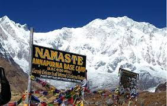

Annapurna Base Camp
The Annapurna Base Camp Trek (ABC) is a breathtaking journey through a richly varied terrain and culture that includes charming Gurung villages, terraced farms, and a vast range of flora and animals.
The trek to Mt. Annapurna's base camp, which is located at a height of 4130m/13549ft, is among the most well-known hikes on the planet. The peak, which stands at 8091m in Nepal, is the tenth tallest mountain in the world. Additionally, Mt. Machhapuchhre (Fishtail), which the Nepalese adore for its singular beauty, is how we get to our goal. Additionally, because of the well planned schedule of the Annapurna Base Camp trekking package, it is a well-liked option among a variety of outdoor enthusiasts, from female lone travelers to hikers going to Nepal in groups.
The trek to Mt. Annapurna's base camp, which is located at a height of 4130m/13549ft, is among the most well-known hikes on the planet. The peak, which stands at 8091m in Nepal, is the tenth tallest mountain in the world. Additionally, Mt. Machhapuchhre (Fishtail), which the Nepalese adore for its singular beauty, is how we get to our goal. Additionally, because of the well planned schedule of the Annapurna Base Camp trekking package, it is a well-liked option among a variety of outdoor enthusiasts, from female lone travelers to hikers going to Nepal in groups.

Langtang Trek
The first national park in the Himalayas was created in 1976 and is called Langtang. The park has an area of 1,710 km2 and is located in the districts of Nuwakot, Rasuwa, and Sindhupalchowk (660 sq mi). The boundary between Nepal and Tibet runs north and east of the park, barely 32 km from Kathmandu, the nation's capital.
Many ungulate species, including musk deer and Himalayan tahr, have summer habitat in Langtang's vast alpine meadows. The red panda, Himalayan black bear, snow leopard, wild dog, ghoral, serow, and more than 250 bird species that may be found in the park are also well-known for their numbers.
Many ungulate species, including musk deer and Himalayan tahr, have summer habitat in Langtang's vast alpine meadows. The red panda, Himalayan black bear, snow leopard, wild dog, ghoral, serow, and more than 250 bird species that may be found in the park are also well-known for their numbers.
Machhapuchhre
An option for trekkers who are impacted by the growing number of motorable roads being built in the Annapurna Conservation Area is offered by the Machhapuchhre Model Trek, a special package. Because of the stunning views of Mount Machhapuchare that we saw along the way, the Machhapuchare Model was given that name. Similar to Mount Fishtail, this trail is undeveloped and allows you to fully enjoy the splendor of nature.
To enjoy the fantastic views of the snow-capped Himalayan range, including the well-known Mt. Annapurna and Mt. Machhapuchare (Fish Tail), mountain landscapes, natural hot water springs, hiking through rhododendron forest, ancient caves, waterfalls, discover various species of flora and fauna, and amazing viewpoints, trekkers have the option of extending the trek up to Mardi Himal Base Camp.
To enjoy the fantastic views of the snow-capped Himalayan range, including the well-known Mt. Annapurna and Mt. Machhapuchare (Fish Tail), mountain landscapes, natural hot water springs, hiking through rhododendron forest, ancient caves, waterfalls, discover various species of flora and fauna, and amazing viewpoints, trekkers have the option of extending the trek up to Mardi Himal Base Camp.
Namaste ABC
The Hindu goddess of food and nourishing is said to live in the Annapurna range, which bears her name. The name Annapurna, which is derived from the Sanskrit words for "food" and "full," is translated as "Everlasting food." The area has several streams that supply the lowlands of the Annapurna range with water for their pastures and agricultural areas.
The only 8,000-meter mountain to be scaled on the first two without bottled oxygen is Annapurna.
The only 8,000-meter mountain to be scaled on the first two without bottled oxygen is Annapurna.